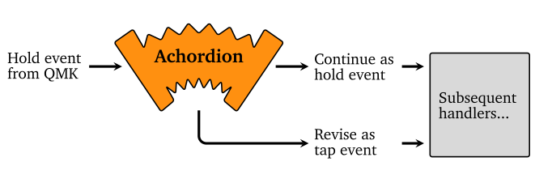

Achordion: Customizing the tap-hold decision
Pascal Getreuer, 2022-03-22 (updated 2025-12-07)
🚀 Launched
Achordion-like behavior is now built into QMK with Chordal Hold! Chordal Hold supersedes Achordion and was released in QMK on 2025-02-27. Update your QMK set up and see Chordal Hold.
🚀 Launched
Chordal Hold is available for ZSA keyboards in Oryx! Find it under Oryx’s Advanced Configuration Settings (announcement).
🚀 Launched
Chordal Hold is in Vial 0.7.4! Enable it under the Tap-Hold tab under QMK Settings.
Overview
Most people who have tried home row mods are
familiar with the struggle of accidental mod activations from typing
rolls. If you are an exception, consider yourself lucky! In QMK, the
standard mitigations as explained in precondition’s
guide are using PERMISSIVE_HOLD and setting
TAPPING_TERM reasonably (in the range 160–220 ms is
typical).
QMK’s tap-hold implementation provides (with
e.g. TAPPING_TERM_PER_KEY) the flexibility to tune these
configurations per key, with callbacks taking the tap-hold keycode as an
input. But I want more than that:
Manna Harbour’s Bilateral Combinations patches QMK’s core tap-hold logic to consider the key held only when pressed together with a key on the opposite hand.
ZMK’s Positional Hold-Tap configuration takes this idea even further: for each tap-hold key, define a list of key positions with which that tap-hold key may be held.
This post introduces Achordion, a library that does that. Achordion has evolved into core QMK feature Chordal Hold.
Relationship between Achordion and Chordal Hold
Chordal Hold is an improved version of Achordion that is built into QMK core. Both Achordion and Chordal Hold are finely-configurable implementations of an “opposite hands” rule to mitigate accidental mod triggers when using home row mods.
Chordal Hold is a rewrite of Achordion, and built into QMK as a core feature. Chordal Hold is better, stronger, faster in most ways.
Improvements:
- Chordal Hold acts directly in QMK’s core tap-hold logic, eliminating a stage of event buffering. This reduces input lag and improves interop with other features.
- Improved logic for multiple active tap-hold keys for better streak handling.
- Easier to install (just add “
#define CHORDAL_HOLD” in config.h) and easier to configure with an intuitive handedness configuration.
Limitations:
- Chordal Hold itself does not implement behavior analogous to Achordion’s “eager” mods. Instead, see Speculative Hold for that.
For former Achordion users, here is how to migrate to Chordal Hold:
In config.h:
#define TAPPING_TERM 250 #define CHORDAL_HOLD #define PERMISSIVE_HOLDTAPPING_TERMshould be set relatively high, to say 250 ms. The Achordion timeout is effectively combined with the tapping term under Chordal Hold, since there is just one level of event buffering, so you want a longer tapping term.If needed, define
chordal_hold_layoutto specify the handedness of each key. Or mark a key with'*'to exempt it from the “opposite hands” rule.In place of
achordion_chord(), use the similarget_chordal_hold()callback.
See QMK’s Chordal
Hold documentation for more information. You may also be interested
in QMK’s Flow Tap,
analogous to ARCHORDION_STREAK, and QMK’s Speculative
Hold, analogous to Achordion eager mods.
The remainder of this page describes Achordion.
Achordion
Achordion is a userspace QMK library that customizes when tap-hold keys are considered held vs. tapped based on the next pressed key. The library works on top of QMK’s existing tap-hold implementation. You define mod-tap and layer-tap keys as usual and use Achordion to fine-tune the behavior.

When QMK settles a tap-hold key as “held,” Achordion intercepts the event. Achordion then revises the event as a tap or passes it along as a hold based on the following rules:
Chord condition: On the next key press, a customizable
achordion_chord()function is called, which takes the tap-hold key and the next key pressed as args. When the function returns true, the tap-hold key is settled as held, and otherwise as tapped.Timeout: If no other key press occurs within a timeout, the tap-hold key is settled as held. This is customizable per key with
achordion_timeout().
Achordion only changes the behavior when QMK considers the key to be held. It changes some would-be holds to taps, but no taps to holds.
Compatibility
When Achordion settles a tap-hold key, it plumbs the tap or hold
event back into the handling pipeline, so other features including
macros in process_record_user() will see it. So Achordion
should interoperate with most QMK features and user code. I’ve been
using Achordion successfully together with Autocorrection, Caps Word, and Custom Shift Keys.
Limitations: Some QMK features handle events before the point where userspace code can intercept them. I don’t expect Achordion to interoperate properly with them, and unfortunately, this isn’t entirely fixable without making changes to core QMK code. It is still possible to use these features and Achrodion in your keymap, but behavior may be poor when using these features while holding a tap-hold key. Particularly:
Key Lock probably doesn’t work with Achordion.
Dynamic Macros probably doesn’t work with Achordion.
Combos also handle events before Achordion. A mitigation is implemented so that combo events bypass Achordion, so combos and tap-hold keys should still work together.
Add Achordion to your keymap
Install my community
modules. Then enable module getreuer/achordion
in your keymap.json file. Or if keymap.json
does not exist, create it with the following content:
{
"modules": ["getreuer/achordion"]
}That’s it.
You’ll also of course want to have some tap-hold keys in your keymap. Define mod-tap and layer-tap keys in your keymap in the usual way as described in the Mod-Tap documentation.
Beyond Achordion, you can find further tips for home row mods in Home row mods are hard to use.
Non-module installation (historical)
⚠ Important
There are two implementations of this feature: the community module described above (recommended) and the earlier non-module implementation described in this section. Pick one. Do not install both, or they will conflict and fail to build.
Step 1: In your keymap.c, call
Achordion from your process_record_user() function:
#include "features/achordion.h"
bool process_record_user(uint16_t keycode, keyrecord_t* record) {
if (!process_achordion(keycode, record)) { return false; }
// Your macros ...
return true;
}If your process_record_user() has other handlers or
macros, Achordion should preferably be called before anything else.
Step 2: In your keymap.c, define (or
add to) housekeeping_task_user():
void housekeeping_task_user(void) {
achordion_task();
}Step 3: In your rules.mk, add
SRC += features/achordion.cStep 4: In the directory containing your
keymap.c, create a features subdirectory and
copy achordion.h
and achordion.c
there.
Troubleshooting: Achordion makes use of some fairly recent QMK APIs. If your keymap fails to build, a likely reason is that your QMK installation simply needs to be updated. Particularly, building with an outdated QMK version should fail with
achordion: QMK version is too old to build. Please update QMK.If you have the qmk_firmware git repo cloned locally, do a
git pull. Or see Updating
your master branch for more details.
How does Achordion affect delay?
Delay is an important drawback of tap-hold keys, so here we cover how Achordion affects that. In practice, I see no added delay with Achordion beyond the delay that QMK’s tap-hold keys have on their own. To back this up, I’ll walk through a few cases of pressing tap-hold keys along with other keys.
Achordion adds no delay when QMK decided the tap-hold key was tapped. Only holds are affected.
Good case: normal typing. Achordion adds no visible delay during normal typing.
Suppose
PERMISSIVE_HOLDis enabled (I recommend it!), and a key is pressed and released within the tapping term while a tap-hold key is down. Then, QMK settles the tap-hold as held the instant the other key is released. In this good case, Achordion will receive an event for the tap-hold key being pressed followed back-to-back by an event for the other key being pressed, and without delay, Achordion decides whether the mod-tap is tapped or held.Alternatively if a tap-hold key is held past the tapping term, then QMK considers the tap-hold key held, but this has no visible effect until a following key is pressed (at least usually, holding a mod or layer switch by itself has no visible effect). Once that following key press happens, Achordion can settle its decision whether the key is tapped vs. held. So again no visible delay is added.
Tricky case: mod + mouse. A tricky case for mod-taps and especially with Achordion or Bilateral Combinations is using a mod-tap with a mouse, for instance to do Ctrl + click. Since there is no following key press after the mod-tap goes down, you would normally need to wait out Achordion’s timeout before clicking the mouse. This case was a big gripe for me, so I came up with an “eager mods” workaround to eliminate this delay. This is described further below.
Customization
achordion_chord()
This callback is the main point of customization. Suppose that while
a tap-hold key is pressed down, some other key is pressed. Then
achordion_chord() is called to decide the outcome. It takes
both the tap-hold key and other key as inputs. The return value is
true to consider the tap-hold key held or
false to consider it tapped.
The default definition of achordion_chord() returns true
if the two keys are on opposite hands, producing an effect like
Bilateral Combinations:
bool achordion_chord(uint16_t tap_hold_keycode,
keyrecord_t* tap_hold_record,
uint16_t other_keycode,
keyrecord_t* other_record) {
return achordion_opposite_hands(tap_hold_record, other_record);
}But there is more flexibility than this. You can make any condition based on the tap-hold key’s and the other key’s keycodes or records. For instance, in my keymap I made a few exceptions to the opposite hands rule:
bool achordion_chord(uint16_t tap_hold_keycode,
keyrecord_t* tap_hold_record,
uint16_t other_keycode,
keyrecord_t* other_record) {
// Exceptionally consider the following chords as holds, even though they
// are on the same hand in Dvorak.
switch (tap_hold_keycode) {
case HOME_A: // A + U.
if (other_keycode == HOME_U) { return true; }
break;
case HOME_S: // S + H and S + G.
if (other_keycode == HOME_H || other_keycode == KC_G) { return true; }
break;
}
// Also allow same-hand holds when the other key is in the rows below the
// alphas. I need the `% (MATRIX_ROWS / 2)` because my keyboard is split.
if (other_record->event.key.row % (MATRIX_ROWS / 2) >= 4) { return true; }
// Otherwise, follow the opposite hands rule.
return achordion_opposite_hands(tap_hold_record, other_record);
}With the above, my layer-tap on A switches layers when
chorded with U or chorded with keys below the alphas. But
with any other left-hand key, A is considered tapped.
Matrix coordinates: It makes sense to treat the
thumb clusters and outermost rows or columns differently than the main
alphas area, depending on the geometry of your keyboard. You can use
other_record->event.key.row and .col to get
the matrix coordinate of the other key. A complication is that on split
keyboards, rows are typically doubled up so that the first
MATRIX_ROWS / 2 rows are the left hand and the following
MATRIX_ROWS / 2 rows are the right hand. On my 6x6 split
Dactyl Ergodox, .row = 4 or 10 corresponds to the keys just
below the alphas and 5 and 11 to the thumb clusters. I exclude them from
the opposite hands rule with:
if (other_record->event.key.row % (MATRIX_ROWS / 2) >= 4) { return true; }See corresponding physical keys to matrix positions for further tips on working out the matrix correspondence for your keyboard.
It is also perfectly valid to make conditions on
other_keycode. For instance if you only want the opposite
hands rule on alpha keys, do
switch (other_keycode) {
case QK_MOD_TAP ... QK_MOD_TAP_MAX:
case QK_LAYER_TAP ... QK_LAYER_TAP_MAX:
other_keycode &= 0xff; // Get base keycode.
}
// Allow same-hand holds with non-alpha keys.
if (other_keycode > KC_Z) { return true; }
return achordion_opposite_hands(tap_hold_record, other_record);achordion_timeout()
The achordion_timeout() callback customizes the timeout
duration per each tap-hold key. By default, the timeout is 1000 ms (1
second) for all keys:
uint16_t achordion_timeout(uint16_t tap_hold_keycode) {
return 1000;
}The timeout duration must be in the range 0 to 32767 ms, the upper limit due to 16-bit timer limitations. I suggest setting it between 500 and 5000 ms.
Achordion can only change the tap-hold decision during the timeout window. If the timeout is too short, Achordion has little effect. A timeout of 0 bypasses Achordion, making no modification to QMK’s tap-hold decision. In my keymap, I bypass Achordion for a couple tap-hold keys, and otherwise use a timeout of 800 ms:
uint16_t achordion_timeout(uint16_t tap_hold_keycode) {
switch (tap_hold_keycode) {
case HOME_SC:
case HOME_Z:
return 0; // Bypass Achordion for these keys.
}
return 800; // Otherwise use a timeout of 800 ms.
}achordion_eager_mod()
Mod-tap keys have the drawback that they add a delay between pressing the button and keys being sent to the host. This is especially sluggish when using mod-taps with a mouse: Ctrl + Click requires holding the mod-tap, waiting out Achordion’s timeout, then clicking.
There are some partial solutions:
Of course, reducing Achordion’s timeout reduces this delay, though as mentioned above, Achordion has little effect if the timeout is too short.
Another workaround is to use mouse keys while holding a mod-tap, which will handle like any other key event to settle the mod-tap as held, but this doesn’t work with an external mouse.
A better solution without these compromises is to “eagerly” apply the mod while the tap-hold decision is still being settled. When QMK sends Achordion a mod-tap hold event, the mod is immediately applied. If later the mod-tap is settled as a tap, the mod is canceled before any following key press takes effect.
The achordion_eager_mod() callback defines which mods
are eager. The mod arg should be compared with
MOD_ prefixed codes, not KC_ codes. The
default callback makes Shift and Ctrl mods eager:
bool achordion_eager_mod(uint8_t mod) {
switch (mod) {
case MOD_LSFT:
case MOD_RSFT:
case MOD_LCTL:
case MOD_RCTL:
return true; // Eagerly apply Shift and Ctrl mods.
default:
return false;
}
}This makes Achordion much nicer to use with a mouse!
Notes:
Even with eager mods, the initial hold event from QMK is still delayed by the tapping term. You can reduce
TAPPING_TERM, or useTAPPING_TERM_PER_KEYfor a specific key, to reduce delay further.On an eager mod
MTkey, hold events are not plumbed to subsequent handlers, even once settled. Tap events are plumbed.
Typing streaks
The ACHORDION_STREAK option disables hold behaviors when
in a typing streak. In a sequence of typing keys A,
B, C where B is a tap-hold key and
A and C are regular keys, a “streak” is
determined as the duration from the release of A until the
press of C being quicker than a timeout, by default 200 ms.
This can help prevent accidental mod activation during fast tapping
sequences. It is inspired by sunaku’s
typing streak logic.
To enable typing streak detection, add in config.h:
#define ACHORDION_STREAKOptionally, define achordion_streak_chord_timeout() in
keymap.c to customize the typing streak timeout:
uint16_t achordion_streak_chord_timeout(
uint16_t tap_hold_keycode, uint16_t next_keycode) {
return 200; // Default of 100 ms.
}A different streak timeout may be defined per key if desired. A timeout of zero disables streak detection for that key. For instance the following sets a shorter streak timeout for Shift and disables streak detection for layer-tap keys:
uint16_t achordion_streak_chord_timeout(
uint16_t tap_hold_keycode, uint16_t next_keycode) {
if (IS_QK_LAYER_TAP(tap_hold_keycode)) {
return 0; // Disable streak detection on layer-tap keys.
}
// Otherwise, tap_hold_keycode is a mod-tap key.
uint8_t mod = mod_config(QK_MOD_TAP_GET_MODS(tap_hold_keycode));
if ((mod & MOD_LSFT) != 0) {
return 100; // A shorter streak timeout for Shift mod-tap keys.
} else {
return 240; // A longer timeout otherwise.
}
}Optionally, define achordion_streak_continue() in
keymap.c to customize which keys can be part of a streak. The default
definition is the following, allowing letters A–Z, punctuations
.,' and space to continue streaks:
bool achordion_streak_continue(uint16_t keycode) {
// If mods other than shift or AltGr are held, don't continue the streak.
if (get_mods() & (MOD_MASK_CG | MOD_BIT_LALT)) return false;
// This function doesn't get called for holds, so convert to tap keycodes.
if (IS_QK_MOD_TAP(keycode)) {
keycode = QK_MOD_TAP_GET_TAP_KEYCODE(keycode);
}
if (IS_QK_LAYER_TAP(keycode)) {
keycode = QK_LAYER_TAP_GET_TAP_KEYCODE(keycode);
}
// Regular letters and punctuation continue the streak.
if (keycode >= KC_A && keycode <= KC_Z) return true;
switch (keycode) {
case KC_DOT:
case KC_COMMA:
case KC_QUOTE:
case KC_SPACE:
return true;
}
return false; // All other keys end the streak.
}Tap-hold configuration
Regardless of whether you use Achordion, you need to tune QMK’s tap-hold configuration to get a decent home row mods experience. Here are the settings I use.
In config.h:
// Tap-hold configuration for home row mods.
#define TAPPING_TERM 175
#define PERMISSIVE_HOLD
#define QUICK_TAP_TERM_PER_KEYIn keymap.c:
uint16_t get_quick_tap_term(uint16_t keycode, keyrecord_t* record) {
// If you quickly hold a tap-hold key after tapping it, the tap action is
// repeated. Key repeating is useful e.g. for Vim navigation keys, but can
// lead to missed triggers in fast typing. Here, returning 0 means we
// instead want to "force hold" and disable key repeating.
switch (keycode) {
case HOME_N:
// Repeating is useful for Vim navigation keys.
case QHOME_J:
case QHOME_K:
case QHOME_L:
return QUICK_TAP_TERM; // Enable key repeating.
default:
return 0; // Otherwise, force hold and disable key repeating.
}
}See also the QMK documentation on Tap-Hold Configuration Options for details on what these options mean and precondition’s guide for their use with home row mods.
Other tricks
Here are a couple further tricks for getting the most out of tap-hold keys. They work with Achordion, but Achordion is not required.
One-shot mod-tap key
You can modify a mod-tap key to behave like a one-shot mod when held. This changes the hold action so that the mod applies to only the first key tapped while the mod-tap is held. Thanks to @rafaelromao for this idea. This can be done by adding in keymap.c:
// Copyright 2022 Google LLC.
// SPDX-License-Identifier: Apache-2.0
// Replaces a mod-tap key's hold function with its one-shot counterpart.
static bool oneshot_mod_tap(uint16_t keycode, keyrecord_t* record) {
if (record->tap.count == 0) { // Key is being held.
if (record->event.pressed) {
const uint8_t mods = (keycode >> 8) & 0x1f;
add_oneshot_mods(((mods & 0x10) == 0) ? mods : (mods << 4));
}
return false; // Skip default handling.
}
return true; // Continue default handling.
}
bool process_record_user(uint16_t keycode, keyrecord_t* record) {
if (!process_achordion(keycode, record)) { return false; }
switch (keycode) {
case LSFT_T(KC_D):
case RSFT_T(KC_K):
return oneshot_mod_tap(keycode, record);
}
return true;
}Tap vs. long press
You can have a key perform a different action on tap vs. when held a
bit longer by customizing a layer-tap LT key. Thanks to
@filterpaper and
@jweickm for teaching
me this trick. First, define a layer-tap key like
LT(0, kc), where kc is a basic keycode to be
sent on tap and the layer is a dummy placeholder.
#define COMM_COPY LT(0, KC_COMM)Then in process_record_user(), we customize the long
press action:
// Helper for implementing tap vs. long-press keys. Given a tap-hold
// key event, replaces the hold function with `long_press_keycode`.
static bool process_tap_or_long_press_key(
keyrecord_t* record, uint16_t long_press_keycode) {
if (record->tap.count == 0) { // Key is being held.
if (record->event.pressed) {
tap_code16(long_press_keycode);
}
return false; // Skip default handling.
}
return true; // Continue default handling.
}
bool process_record_user(uint16_t keycode, keyrecord_t* record) {
if (!process_achordion(keycode, record)) { return false; }
switch (keycode) {
case COMM_COPY: // Comma on tap, Ctrl+C on long press.
return process_tap_or_long_press_key(record, C(KC_C));
// Other macros...
}
return true;
}See tap vs. long press for further discussion and variations on this idea.
Explanation
If you are interested in the technical details, here is an explanation of Achordion’s implementation and how it works together with QMK’s core tap-hold handling.
Tap-hold event plumbing
The life of a tap-hold key event goes like this, to my understanding:
- When matrix scanning detects a change, an event is generated.
- void action_exec(keyevent_t event) is where handling of the event begins.
action_exec()in turn calls into the tap-hold handling code void action_tapping_process(keyrecord_t record). The code here is complicated, and depending on the situation, the key event might go into a waiting buffer before it is passed to further handlers.- Once the tap-hold handler has “settled” the decision of whether the
key is tapped vs. held, it calls void
process_record(keyrecord_t* record). For a tap-hold key event, the
tap.countfield indicates the outcome of this decision: a positive value means tapped and zero means held. process_record()calls process_record_quantum(), which is the main point for calling into other most other QMK features andprocess_record_user(). Fortunately for userspace libraries,process_record_user()is called early on before most other handlers, so Achordion is able to intercept tap-hold events before most features see it.
Intercepting the event
When Achordion sees a tap-hold press event, it “intercepts” it so that subsequent handlers don’t see it immediately. This is implemented by saving the keycode and record args (so that we can use them later) and returning false (telling the caller to skip default handling).
Holding the key
If we decide the key was held, we perform its hold action. One
possible approach would be to extract the mod or layer from the upper
byte of the keycode, then call register_mods() for a
mod-tap or layer_on() for a layer-tap as appropriate.
However, this would prevent subsequent handlers from responding to the
hold event. Instead, we call process_record(), passing the
record that Achordion had received earlier from QMK.
There is further a complication for layer-taps: if we decided that
the key was held in response to a press event on another key, then the
keycode for that other key does not take into account the layer change
that was just made. To get around this, we call
process_record(), passing the same record to have it
re-process the event after the layer change, then return false to block
the original event.
Tapping the key
If instead we decide the key was tapped, we perform its tap action.
An easy implementation would be to call tap_code() on the
basic keycode, but again, subsequent handlers then would miss these
taps. For instance if you are also running autocorrection, handling these
taps would matter to detect typos correctly. To get subsequent handlers
to see them, we again do some event plumbing:
Revise the tap-hold key’s record to a tap press event by changing its
tap.countfield, then pass this manipulated record toprocess_record().Wait for
TAP_CODE_DELAYmilliseconds.Make the corresponding tap release event by changing the record’s
event.pressedfield tofalseand passing it again toprocess_record().
Multiple tap-hold keys
A potentially complicated situation is what to do when the next key press is also a tap-hold key that QMK has settled as held, meaning multiple tap-hold keys pressed at once. If this happens, we settle both keys as held, bypassing Achordion. This way things like home row modifier chords work and allows Achordion to otherwise consider simply a single active tap-hold key at a time.
Acknowledgements
Much thanks to GitHub users @akaralar, @alxzh, @bschwehn, @Ceffa93, @christoph-cullmann, @drashna, @fdidron, @filterpaper, @gazpachoking, @JanValiska, @KarlK90, @jasonkena, @jdart, @jweickm, @MichaelOstermann, @proostas, @SavageMessiah, @Sigvah, @sommerper, @TristanCacqueray and Reddit user u/02ranger for contributions and feedback to improve Achordion and Chordal Hold.